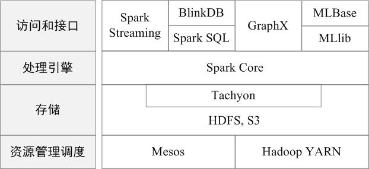

Spark简介
Apache Spark™ is a unified analytics engine for large-scale data processing.
Spark的设计遵循“一个软件栈满足不同应用场景”的理念，逐渐形成了一套完整的生态系统，既能够提供内存计算框架，也可以支持SQL即席查询、实时流式计算、机器学习和图计算等。Spark可以部署在资源管理器YARN之上，提供一站式的大数据解决方案。因此，Spark所提供的生态系统足以应对上述三种场景，即同时支持批处理、交互式查询和流数据处理。
现在，Spark生态系统已经成为伯克利数据分析软件栈BDAS（Berkeley Data Analytics Stack）的重要组成部分。BDAS的架构如图所示，从中可以看出，Spark专注于数据的处理分析，而数据的存储还是要借助于Hadoop分布式文件系统HDFS、Amazon S3等来实现的。因此，Spark生态系统可以很好地实现与Hadoop生态系统的兼容，使得现有Hadoop应用程序可以非常容易地迁移到Spark系统中。

Spark的生态系统主要包含了Spark Core、Spark SQL、Spark Streaming、MLLib和GraphX 等组件，各个组件的具体功能如下：
- Spark Core：Spark Core包含Spark的基本功能，如内存计算、任务调度、部署模式、故障恢复、存储管理等。Spark建立在统一的抽象RDD之上，使其可以以基本一致的方式应对不同的大数据处理场景；通常所说的Apache Spark，就是指Spark Core；
- Spark SQL：Spark SQL允许开发人员直接处理RDD，同时也可查询Hive、HBase等外部数据源。Spark SQL的一个重要特点是其能够统一处理关系表和RDD，使得开发人员可以轻松地使用SQL命令进行查询，并进行更复杂的数据分析；
- Spark Streaming：Spark Streaming支持高吞吐量、可容错处理的实时流数据处理，其核心思路是将流式计算分解成一系列短小的批处理作业。Spark Streaming支持多种数据输入源，如Kafka、Flume和TCP套接字等；
- MLlib（机器学习）：MLlib提供了常用机器学习算法的实现，包括聚类、分类、回归、协同过滤等，降低了机器学习的门槛，开发人员只要具备一定的理论知识就能进行机器学习的工作；
- GraphX（图计算）：GraphX是Spark中用于图计算的API，可认为是Pregel在Spark上的重写及优化，Graphx性能良好，拥有丰富的功能和运算符，能在海量数据上自如地运行复杂的图算法。
基本概念
在具体讲解Spark运行架构之前，需要先了解几个重要的概念：
- RDD：是弹性分布式数据集（Resilient Distributed Dataset）的简称，是分布式内存的一个抽象概念，提供了一种高度受限的共享内存模型；
- DAG：是Directed Acyclic Graph（有向无环图）的简称，反映RDD之间的依赖关系；
- Executor：是运行在工作节点（Worker Node）上的一个进程，负责运行任务，并为应用程序存储数据；
- 应用：用户编写的Spark应用程序；
- 任务：运行在Executor上的工作单元；
- 作业：一个作业包含多个RDD及作用于相应RDD上的各种操作；
- 阶段：是作业的基本调度单位，一个作业会分为多组任务，每组任务被称为“阶段”，或者也被称为“任务集”。
架构设计
Spark运行架构包括集群资源管理器（Cluster Manager）、运行作业任务的工作节点（Worker Node）、每个应用的任务控制节点（Driver）和每个工作节点上负责具体任务的执行进程（Executor）。其中，集群资源管理器可以是Spark自带的资源管理器，也可以是YARN或Mesos等资源管理框架。

在Spark中，一个应用（Application）由一个任务控制节点（Driver）和若干个作业（Job）构成，一个作业由多个阶段（Stage）构成，一个阶段由多个任务（Task）组成。当执行一个应用时，任务控制节点会向集群管理器（Cluster Manager）申请资源，启动Executor，并向Executor发送应用程序代码和文件，然后在Executor上执行任务，运行结束后，执行结果会返回给任务控制节点，或者写到HDFS或者其他数据库中。

Spark运行基本流程
（1）当一个Spark应用被提交时，首先需要为这个应用构建起基本的运行环境，即由任务控制节点（Driver）创建一个SparkContext，由SparkContext负责和资源管理器（Cluster Manager）的通信以及进行资源的申请、任务的分配和监控等。SparkContext会向资源管理器注册并申请运行Executor的资源；
（2）资源管理器为Executor分配资源，并启动Executor进程，Executor运行情况将随着“心跳”发送到资源管理器上；
（3）SparkContext根据RDD的依赖关系构建DAG图，DAG图提交给DAG调度器（DAGScheduler）进行解析，将DAG图分解成多个“阶段”（每个阶段都是一个任务集），并且计算出各个阶段之间的依赖关系，然后把一个个“任务集”提交给底层的任务调度器（TaskScheduler）进行处理；Executor向SparkContext申请任务，任务调度器将任务分发给Executor运行，同时，SparkContext将应用程序代码发放给Executor；
（4）任务在Executor上运行，把执行结果反馈给任务调度器，然后反馈给DAG调度器，运行完毕后写入数据并释放所有资源。

Spark的部署模式
Spark支持三种典型集群部署方式，即standalone、Spark on Mesos和Spark on YARN；企业中是如何具体部署和应用Spark框架的，在企业实际应用环境中，针对不同的应用场景，可以采用不同的部署应用方式，或者采用Spark完全替代原有的Hadoop架构，或者采用Spark和Hadoop一起部署的方式。
Spark应用程序在集群上部署运行时，可以由不同的组件为其提供资源管理调度服务（资源包括CPU、内存等）。比如，可以使用自带的独立集群管理器（standalone），或者使用YARN，也可以使用Mesos。因此，Spark包括三种不同类型的集群部署方式，包括standalone、Spark on Mesos和Spark on YARN。

Spark on YARN模式
采用Spark架构具有如下优点：
- 实现一键式安装和配置、线程级别的任务监控和告警；
- 降低硬件集群、软件维护、任务监控和应用开发的难度；
- 便于做成统一的硬件、计算平台资源池。
需要说明的是，Spark Streaming的原理是将流数据分解成一系列短小的批处理作业，每个短小的批处理作业使用面向批处理的Spark Core进行处理，通过这种方式变相实现流计算，而不是真正实时的流计算，因而通常无法实现毫秒级的响应。因此，对于需要毫秒级实时响应的企业应用而言，仍然需要采用流计算框架（如Storm）。